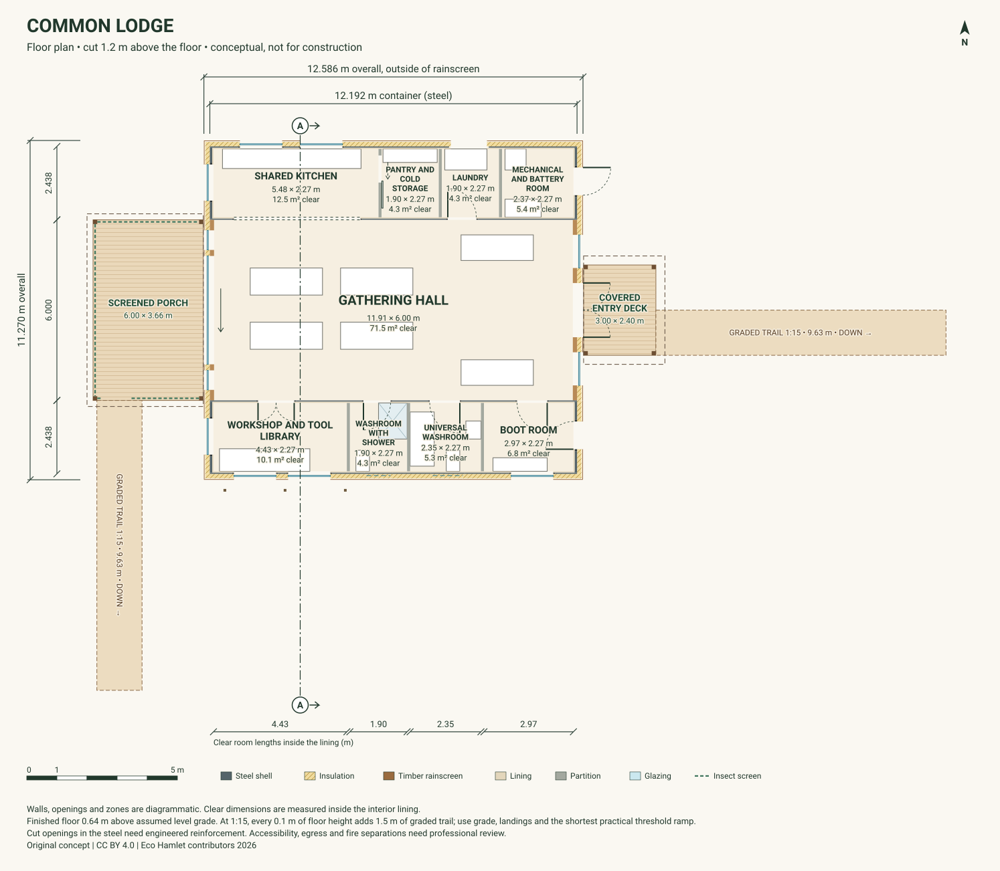
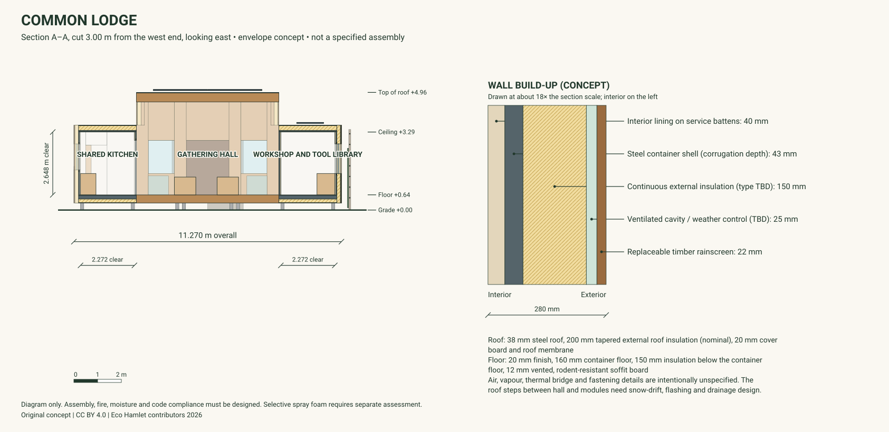

Concept drawings and rooms
The common lodge
Two reused containers and a glazed timber hall under one roof, with a shared kitchen, gathering hall, workshop and universal washroom. Concept only; not construction drawings.
Not engineered. Dimensions, openings, structure, fire separation, accessibility and energy performance require professional review. See the Look inside explorer for the room model.
Facts and intent
- Overall size
- ~12.6 × 11.3 m outside the rainscreen (~142 m² footprint)
- Modules
- 2 × 40-foot high-cube ISO container, 12.192 × 2.438 × 2.896 m
- Clear floor area
- ~124 m² inside the lining, plus ~29 m² of porch and deck
- Clear height
- 2.65 m in the modules; 3.92 m in the hall
- Floor above grade
- ~0.6 m on piles, with a graded gravel trail/landing at 1:15; the longest section is 9.6 m, not a timber walkway
- Exterior wall
- 280 mm: lining, steel, 150 mm external insulation, ventilated cavity, timber rainscreen
- Roof PV (concept)
- 25 modules, about 10.5 kWp, drawn as individual tilted panels; sizing needs measured solar resource and winter loads
Rooms
| Room | Clear size | Area | Use | Accessibility notes |
|---|---|---|---|---|
| Shared kitchen | ~5.5 × 2.3 m | ~12.5 m² | Community kitchen with a 4.2 m wide servery opening to the hall. | About 1.6 m clear in front of the counter. Include a lowered work section with knee space and front-mounted controls. |
| Pantry and cold storage | ~1.9 × 2.3 m | ~4.3 m² | Shared bulk food storage reached from the kitchen. | Reachable shelving between 0.4 m and 1.2 m for frequently used items. |
| Laundry | ~1.9 × 2.3 m | ~4.3 m² | Shared washer and dryer, reached from the hall. | Front-loading machines on a raised plinth; 1.5 m clear in front. |
| Mechanical and battery room | ~2.4 × 2.3 m | ~5.4 m² | Heat pump, water storage, PV inverter and battery storage. Exterior door only; no door to the occupied building. | Service space; not a public room. |
| Gathering hall | ~11.9 × 6.0 m | ~71.5 m² | Shared meals, meetings, workshops and events. Clerestory windows on both sides; glazed doors to the screened porch on the west and the main entry on the east. | Step-free from both ramps. Plan seating with wheelchair spaces dispersed, a hearing loop for meetings and good daylight without glare. |
| Workshop and tool library | ~4.4 × 2.3 m | ~10.1 m² | Shared tools, repair bench and bicycle maintenance. Supports the repair-first approach to the buildings. | Adjustable-height bench section; 1.2 m wide double door to the hall. |
| Washroom with shower | ~1.9 × 2.3 m | ~4.3 m² | Toilet, sink and shower for guests and work days. | Not designed as the accessible washroom; see the universal washroom. |
| Universal washroom | ~2.4 × 2.3 m | ~5.3 m² | Single-user, all-gender accessible washroom with an adult-size change table. | ~2.4 x 2.3 m clear; 1.0 m door (consider a power operator). Turning space, transfer space, grab bars and the change table to be designed to CSA B651 and the applicable code. |
| Boot room | ~3.0 × 2.3 m | ~6.8 m² | Winter entry with bench, boot drying and a separate exterior door to the east. | Bench at 0.45 m with clear floor space beside it. |
Drawings




Continue
Look inside the lodge · Hamlet map · All homes · Design Lab
The underlying data and downloads remain available from the downloads section.